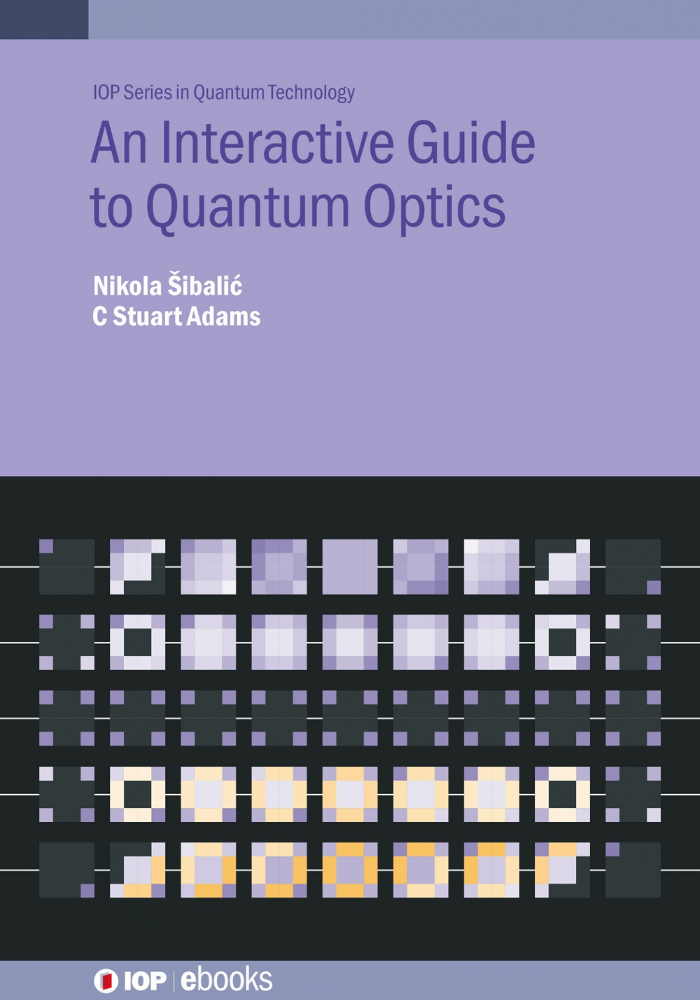

Teaching#
I have been involved in teaching, course/competition creation, marking, and supervision at all levels of physics eduction (primary school -> highschool -> undergraduate -> postgraduate).
Selected materials#
An Interactive Guantum Optics#
{kind=link}
An Interactive Guide to Quantum Optics (co-authored with C Stuart Adams, published by IOPP, 2024) is a primer on quantum optics for students and those wanting an introduction to the topic, with forty interactive figures to develop physics intuition. Historical and contemporary research context is provided, including interactive online literature graphs, as well as experiment models. This is an ideal text for final year undergraduate quantum optics students, and new graduate students in AMO physics, and researchers in physics and electrical/optical engineering. For those without institutional subscription to IOP science, you can get ePUB directly from IOPP Bookstore.
Rydberg Physics#

Free, interactive introductory eBook to Rydberg physics (co-authored with C Stuart Adams, published by IOPP, 2018) for advanced undergraduate and new postgraduates, covers introduction to highly excited Rydberg states in atoms and solid state, and their applications in quantum optics, metrology and quantum simulation.
Important
Recommended way for reading interactive books is directly on IOP Science, or alternatively in EPUB format using Thorium EPUB reader which is a free desktop application on Windows, Mac or Linux, that also supports various accessability options. Choice of reader is important since many simple EPUB readers don’t support EPUB3 fully, which is necessary for interactive elements.
Tools for teaching and supervision#
Additionally, try out projects below that support teaching (selected from Knowledge infrastructure page):
Physics world blogpost and article about using interactive materials to enhance learning and improve discussion of ideas is available here.
Roundtable online table and whiteboard for meetings with collaborative feedback, supporting file sharing, collaborative annotations, equations, etc.
Caroline is a Python framework for creation of HTML-based presentations, with optional features that allow interaction with audience through quizzes and collaborative whiteboard sharing.
Round table meetings#

To find optimal meetings format, optimizing idea transfer while reducing overhead for presentation preparation, and providing engaging experience for audience, is a difficult challenge. I have been organizing meetings of early stage researchers (PhDs and postdocs), connecting different groups in department, using a new format of meetings to focus on efficient communication of transferable ideas. For more details on methodology of the meetings check the infographics.
Experimental hardware design#
Video introduction accessible to lay public, on importance of scientific instruments, introducing a web platform ResearchX3D for sharing scientific apparatus models, stories and design tips.